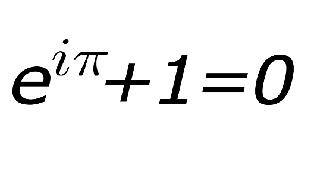
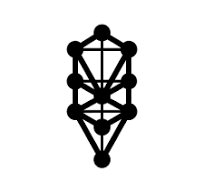
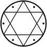

THE PHILOSOPHY OF THE RELIGIOUS PURPOSE
Mindism asserts that Mind, and its inherent intelligence is evolving. Consequently, what was stated (allegedly,) by leaders of religious and theological texts, would have been truths at the time in history, they were spoken, and subsequently documented. The central message they all convey is a common thread to them all. Love, Peace, Humility, and behaving in a kind, compassionate, considerate manner, enables human communities that follow these teachings, to live a life of enjoyable productivity, contentment and more.
The truths they state are contingent truths, they are relatively true because they have no mathematical foundation. Mindism has Math at its fundus, (basis), it is the 'language' of the Universe and how this 'language' is processed, is explained in fine detail in The Book of Mindism. Mindism is a synthesis of the works of great Minds from History, such as Leibnitz, (the father of AI), Euler, whose "identity" is a mathematical proof for reincarnation ('The God Equation', by Michael Hockney), Viktor Schauberger, an unsung genius, Sir Roger Penrose, Plato, Descartes and many others. Consequently, Mindism is founded on Absolute Truths and is a modern 21st Century, theological, religious, academic and spiritual text, enabling a fundamental understanding of how and why we see the world today as we do.
Mindism asserts that your body is 'The Temple', you are 'The Priest', shepherding the information and knowledge you acquire on your journey through this lifetime of continuous learning. It is entelechy, i.e. it has purpose, direction and a realised end, establishing the existence of a defined God.
Mindism is not a challenge to established religions, it is an addendum. A modern explanation of their common core assertions and affirmations.
Below are four slightly different explanations of the conceptual Doctrine of Truth that is MINDISM.
Mindism Asserts… Mindism Explained A short background to Mindism Understanding Mind

This formula, known as Euler's Identity, will produce Yin and Yang Symbols when displayed on the x, y and z axis of a graph mapping the outflow of Pure Waveform emations from the Monad.
This image below is of the 10 sephirot of The Kaballah


Solomon's Seal
The hexagonal DNA
Molecule
The images above. 1) is of Solomon's Seal and 2) the other three represent the connection between Light emanating from the Monad, through the ZPF into the Physical Realm. The two way flow of information enables Life to manifest.